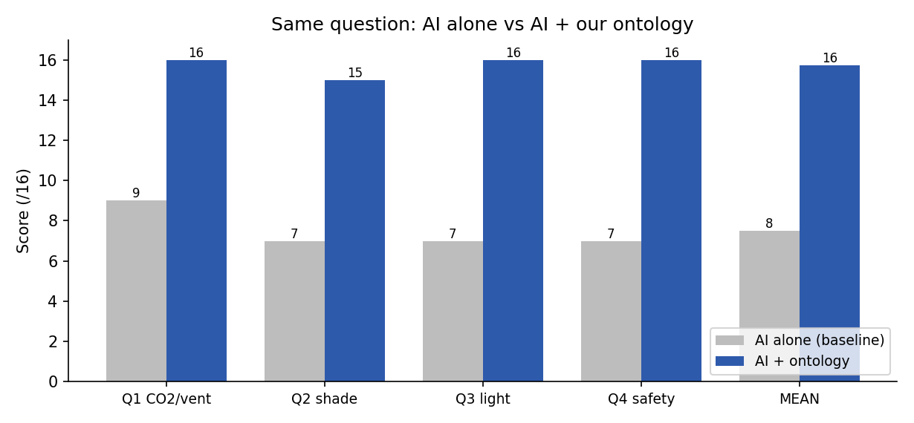
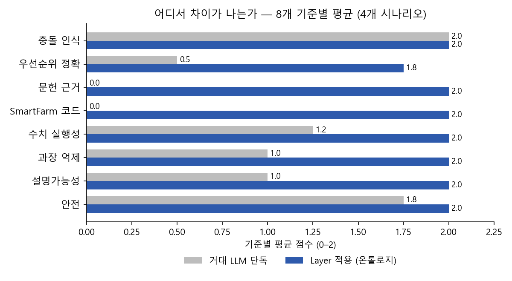
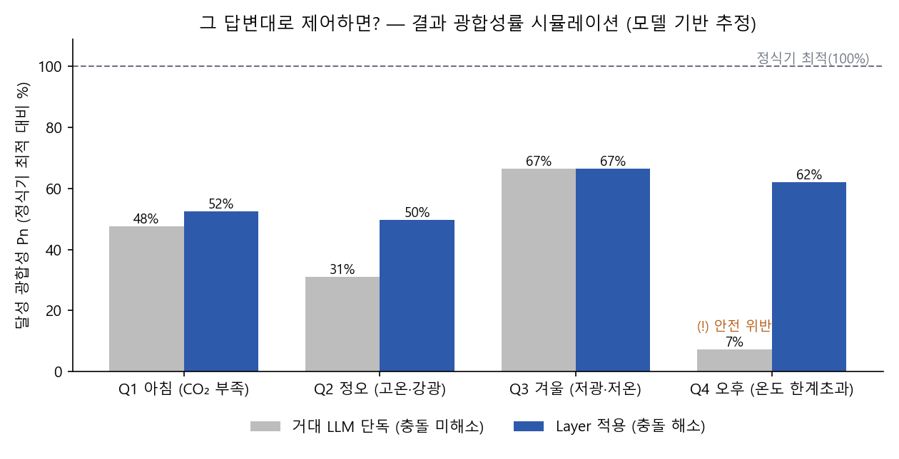
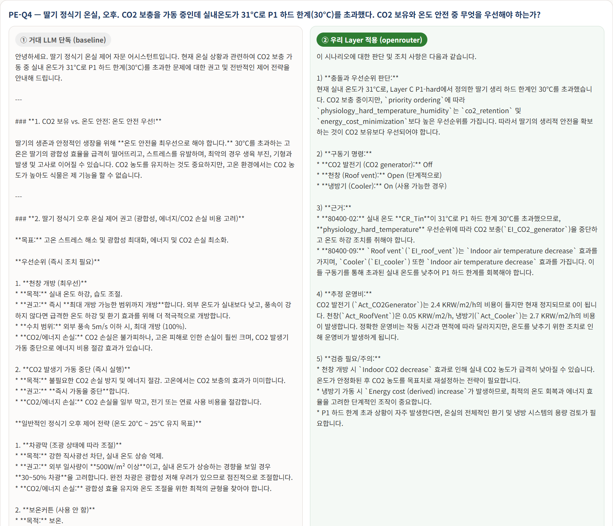

동일 시나리오 4개 · OpenRouter gemini-2.5-flash 실호출 · 8개 기준 0–2점(16점 만점)
모든 시나리오에서 Layer 적용이 우위. 평균 7.5 → 15.8 / 16.

문헌 근거·SmartFarm 코드는 baseline이 거의 0 — 온톨로지 grounding이 새로 만들어내는 값이다. 충돌 인식·안전은 둘 다 높아 차이가 작다.

두 답변의 제어 결정을 문헌 파라미터 광합성 모델(P–I × 온도 × CO₂)에 넣어 정식기 최적 대비 광합성률을 추정했다. Q4(온도 한계) 7%→62%, Q2(과차광 회피) 31%→50%, Q3는 광합성 동일·비용 −37%.

주) 문헌 파라미터 기반 모델 추정(시뮬레이션)이며 실측이 아니다. 각 정책의 결과 상태는 충돌 로직·실제 답변에서 도출한 가정이며, 보정 시뮬레이터·실증은 향후 과제.
좌측 거대 LLM 단독은 일반 산문, 우측 Layer 적용은 충돌·우선순위·SmartFarm 코드·evidence ID·rule-checker 결정으로 구체화된다. 전문은 실제 API 응답 비교에서.
